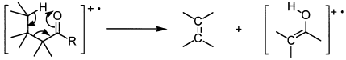

令和4年度 問5 有機化学及び燃料
有機化合物の構造決定に関する以下の記述（A）〜（E）のうち、正しいものの組み合わせはどれか。
- カルボニル基から3原子離れた炭素上に水素を持つアルデヒドやケトンは、次のようなMcLafferty転位という質量スペクトルによる特徴的な開裂を起こす。

- 共役分子に紫外線を照射するとπ電子の1つがHOMOからLUMOへ励起される。共役の程度が大きいほどHOMOとLUMOのエネルギー差は小さくなるので、共役分子の紫外吸収極大波長は短波長側にシフトする。
- アレン CH2＝C=CH2の二重結合は共役しているので紫外吸収を持つ。
- ソフトなイオン化法であるマトリクス支援レーザー脱離イオン化（MALDI）法に飛行時間型質量分析計（TOFMS）と組み合わせて測定すると、高分子量の資料でもほとんどフラグメンテーションを起こさずに質量スペクトルが得られる。
- 第一級及び第二級アミンは赤外スペクトルにおいて3300～3500 cm-1の領域に存在する特徴的なＮ－Ｈ伸縮吸収によって識別できる。一級アミンは対象伸縮と非対象伸縮に基づく一対の吸収帯をおよそ3450 cm-1（対象伸縮）と3350 cm-1（非対象伸縮）に第二級アミンは3350 cm-1に吸収帯を示す。
選択肢
①
Ａ、Ｃ
②
Ｂ、Ｅ
③
Ａ、Ｄ
④
Ｃ、Ｅ
⑤
Ｄ、Ｅ
正答
③ Ａ、Ｄ
Bの共役の程度が大きくなるほど、HOMOとLUMOのエネルギー差は小さくなり、紫外吸収極大波長は長波長側（赤色側）にシフトします。光のエネルギーはＥ＝ｈｃ／λ （ｈ：プランク定数、ｃ：光の速度、λ：光の波長）で表され波長が短いほどエネルギーが高くなります。
Cのアレンの二重結合は共役していません。アレンは累積二重結合を持つ化合物で、その構造は直線的であり、それぞれのπ電子系は互いに直交しているため軌道が重ならず共役していません。
Eのアミンは水素結合を形成することから、幅広い吸収となり判別が難しくなっています。1級および2級アミンで観測される吸収の種類は間違いありません。